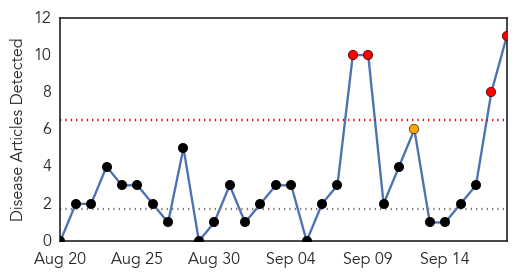
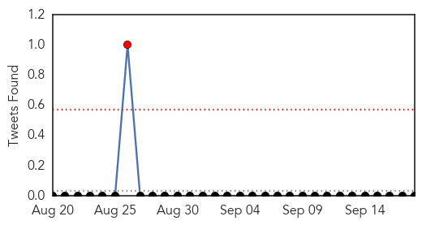
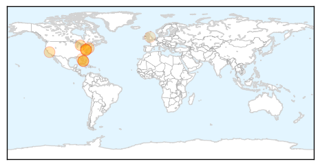
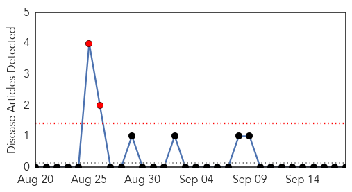
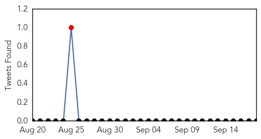

Meningitis
30-Day Web Trend
4 alerts, 1 warnings

30-Day Twitter Trend
1 alerts, 0 warnings

Article Locations
Article Confidences

Top Articles:
- 0.999
- 2 Cases of Viral Meningitis Reported at Wilton High School
- 0.996
- Another infectious disease gains momentum, dangerous for kids
- 0.995
- Health Officials Tell Seniors to Get Flu, Pneumococcal Vaccines
- 0.992
- Andrea Jaime, Georgetown Nursing Student, Dies After Tweeting 'I Think I'm Dying'
- 0.952
- Pharmacist Raises Concerns Over Enterovirus as Illness Spreads
- 0.936
- Georgetown offering preventive antibiotics to close friends of meningitis victim
- 0.857
- Student Tweeted 'this is what dying must feel like' before death
- 0.698
- Florida student attending Georgetown University dies from meningitis
- 0.594
- Florida student dies from meningitis
- 0.554
- Leeds mums lead meningitis campaign
- 0.544
- Florida student dies from meningitis
Top Tweets:
-
No tweets found for Sep 18, 2014
Mumps
30-Day Web Trend
2 alerts, 0 warnings

30-Day Twitter Trend
1 alerts, 0 warnings

Article Locations

Article Confidences

Top Articles:
-
No articles found for Sep 18, 2014
Top Tweets:
-
No tweets found for Sep 18, 2014